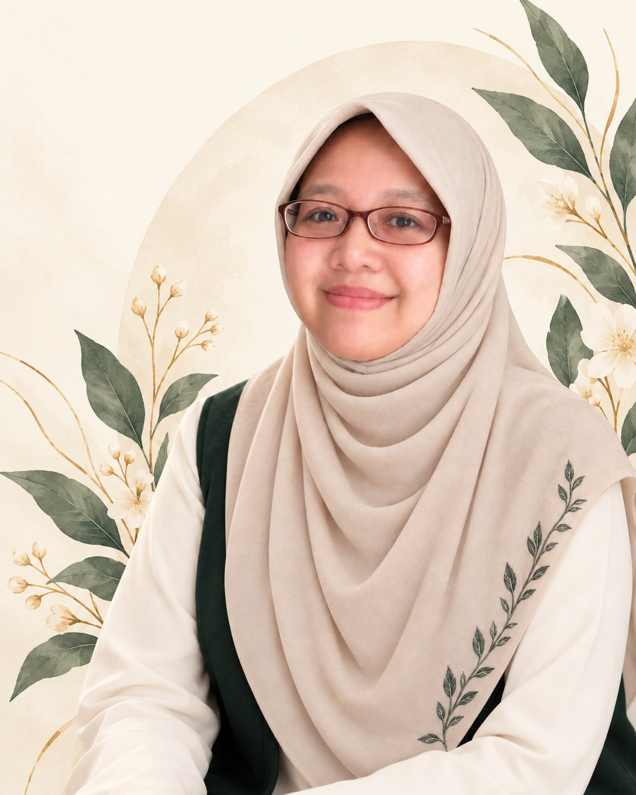

Selama 13 tahun sebagai dokter spesialis kebidanan dan kandungan, saya melihat banyak ibu pulang dari ruang praktik dengan pertanyaan yang belum sempat terjawab.
Sebagai ibu dari dua anak, saya memahami bahwa perjalanan ini berat dan tidak bisa dijalani sendiri. Support system adalah kuncinya.
Itulah kenapa PADMA ada: ekosistem belajar yang personal bagi perempuan dan keluarga, berkelanjutan dari persiapan kehamilan hingga menopause.

PADMA membawa ilmu keluar dari ruang praktik melalui edukasi dan wellness non-klinis.
Jika diperlukan asesmen individual, diagnosis, terapi medis, atau penanganan kondisi gawat, kami mengarahkan klien ke tenaga medis yang sesuai.
Setiap sesi dipandu mitra dengan pelatihan dan pengalaman yang relevan sesuai jenis layanan. Nama, foto, peran, dan identitas mitra dikirim setelah booking terkonfirmasi.